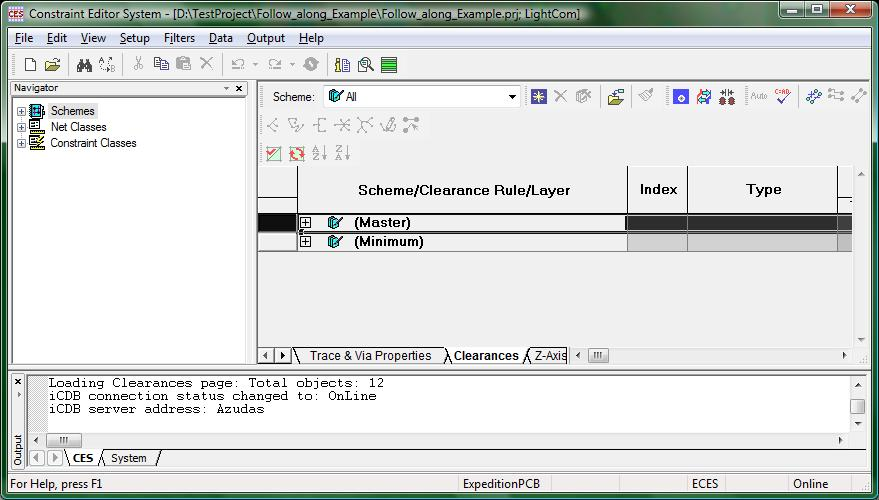
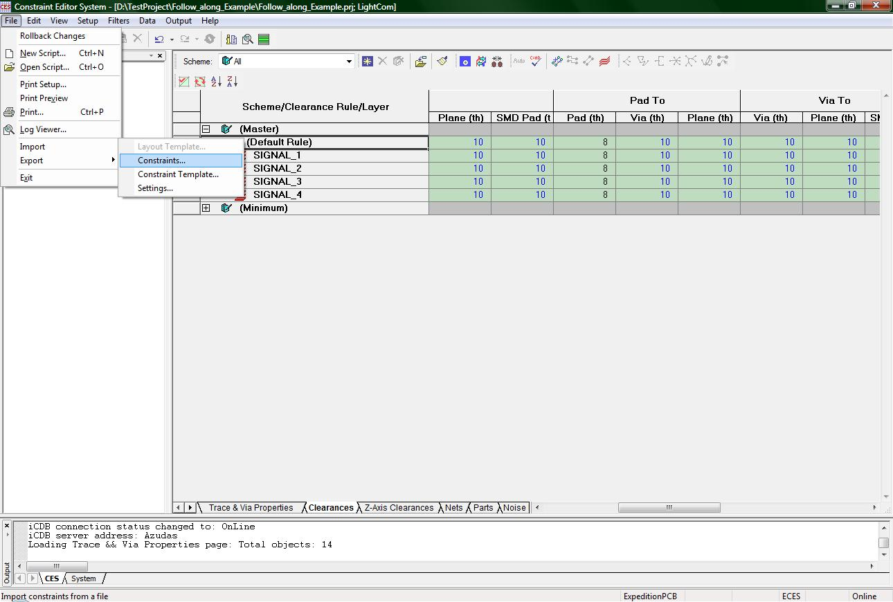

CES:
In this tutorial you will learn how to load the Constraints Editor System with the necessary constraints to produce a board.
To get started you will need to open up a project in Expedition PCB. Once you have done that, merely click on the CES button or use the menu Setup -> Constraints…
This will open up the following window.:

(1-CES_window.jpg)
The CES is a very complicated addition to Expedition PCB that lists all of the constraints for the Design Rule Checker (DRC). You should not have to specify any of the constraints in the CES and should NOT change any values. You will however be given a constraints file that you will need to load. This file will be provided by your instructor.
To load the constraints provided by your instructor, click on the menu File -> Import -> Constraints… like in the following image

(2-CES_import.jpg)
This will open a browse window for you to browse for the file given to you by your instructor. Once you find it (it should be a file with extension .cts) click the OK button and the constraints will be loaded into your CES. When the loading session is done, you will not need to mess with the CES again (though if your instructor provides you with another more updated constraints file you will need to load that file)
That’s it for the CES!